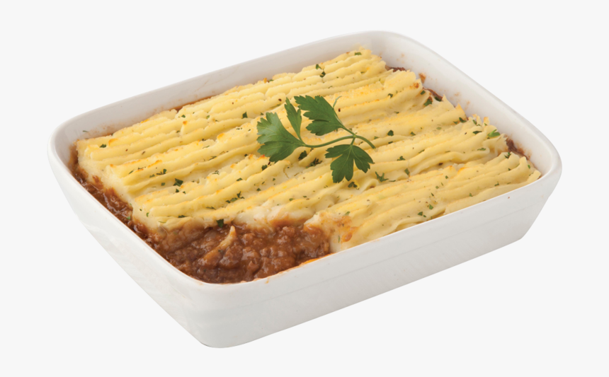

Shepherd's Pie

Description
A british classic
Consists of lamb mince and vegetables, topped with mashed potatoes.
Serves 4
Ingredients
- 2 tbsp vegetable oil
- 1 large onion, finely chopped
- 2 tbsp olive oil
- 500g lamb mince
- 1 tbsp plain flour
- 2 bay leaves
- 400g tin chopped tomatoes
- 450ml chicken/beef/lamb stock
- 2 tsp Worcestershire sauce
- Salt and freshly ground black pepper
For the mash:
- 700g potatoes, peeled and cut into halves or quarters
- 55ml milk
- 85g butter
- Salt and freshly ground black pepper
Steps
- In a large saucepan, heat the vegetable oil. Add the onion and cook for 5 minutes.
- Meanwhile, in a large frying pan, heat the olive oil and fry the mince, stirring, until browned all over. While the meat is frying, break up any lumps with the back of the spoon.
- Stir the onions, then add the flour and stir. Add the bay leaves and stir. Add the chopped tomatoes, stock (keep a little aside, for putting into the mince pan to de-glaze the pan) and Worcestershire sauce.
- Add the cooked mince and then pour the stock mixture into empty mince pan, scraping off any bits of mince left in the pan. Pour the remaining stock into the pan containing the sauce mixture. Bring the mixture to the boil, adding a pinch of salt and pepper and let it simmer for about 45 minutes, stirring regularly.
- Preheat the oven to 200C/180C Fan/Gas 6.
- For the mash, boil the potatoes until tender. Drain, add the milk and butter, then mash until smooth. Season with salt and pepper.
- Pour the meat into a 1.4-litre ovenproof dish and spread the mash on top, smooth over and mark with a spatula. Put the dish into the oven and cook until the surface is golden brown.
Return to home page